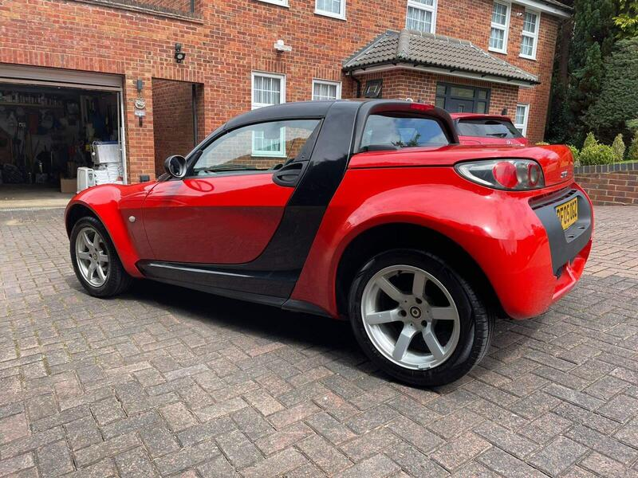
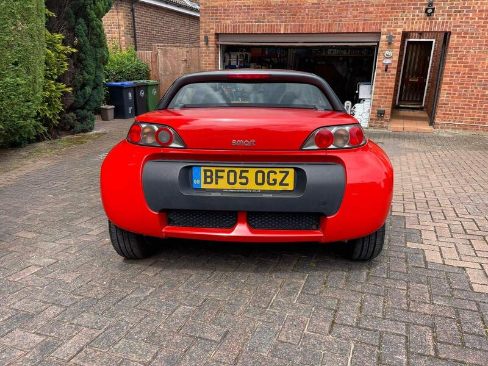
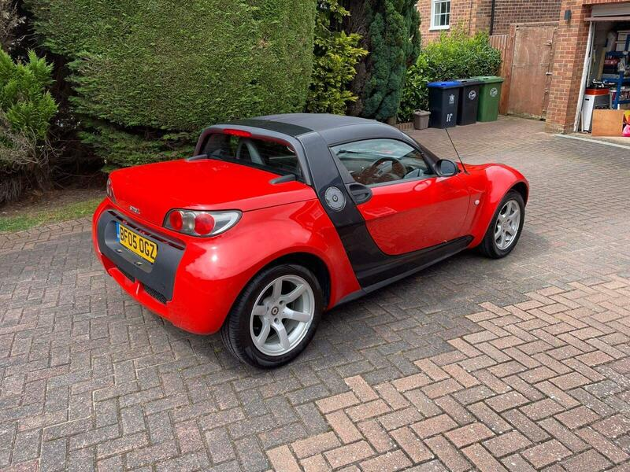

Seller photos from the AutoTrader ad.
Smart Roadster 0.7
Fun, but buy only if it's bone dry.
Key facts
| Price | £2,900 |
|---|---|
| Year | 2005 |
| Miles | 136,565 |
| Model | Smart Roadster 0.7 |
| Colour | Black |
| Registration | 2005 (05 reg) |
| Owners | 3 owners |
| Service history | Not stated |
| MOT | Advisories listed in ad |
| Seller | Private |
| Location | Gerrards Cross |
| From GU7 | 27 mi (AutoTrader) |
| Checked | 13 Oct 2026 |
Why buy it
- Fire Red, 3 owners (ad)
Things to check
136k miles: check for turbo smoke
Check carpets and the SAM unit for water
- Smart Roadster 452 weak spots
Galvanised Tridion cell; check underbody, subframe and rear arches. Chronic water leaks reaching the SAM module (replacement £400+); turbo failures around 70–90k miles; jerky automated gearbox.
Seller says (extract)
“2005 Smart Roadster 0.7 Turbo - Fire Red / Black Panels - 3,000 ONO A rare opportunity to own a 2005 Smart Roadster 0.7 Turbo finished in striking fire red with black panelling. Designed by Mercedes-Benz under the Smart brand, the Roadster was built to bring back the feel of a lightweight classic British sports car with modern reliability, sporty handling, and outstanding fuel economy. With production numbers remaining low, these cars are becoming increasingly collectible and much harder to find in good condition. 136,000 miles 3 owners Very good condition throughout MOT with all major advisories taken care of Features and recent work include: 0.7 litre turbo engine Aftermarket stereo system Brand new SAM unit fitted New roof liner Well maintained and drives very well Clean interior and exterior for its age Since ownership, the car has always been kept either in a garage or under a protective cover…”